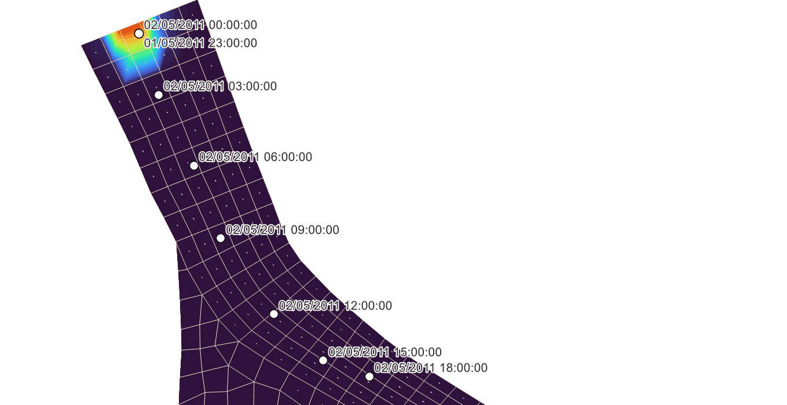

5.16 Boundary Conditions
5.16.2 Description
This section describes how boundary conditions are configured within the 2D HD simulation class. It outlines the available boundary model implementations, explains how boundary locations are spatially defined and details the structure and configuration of boundary condition blocks used to assign input data. TUFLOW FV syntax examples are provided for each boundary type.
Boundary conditions in TUFLOW FV are assigned using the following workflow.
- Select a boundary condition model implementation for the modelling use case. For example inflow/outflow to add or remove flow from the model, water level for astronomical tide boundaries or wind and pressure atmospheric boundaries (Section 5.16.2.1)
- Define the boundary location for the specific boundary type (Section 5.16.2.2)
- Configure the boundary with a boundary condition block and assign the required input data (Section 5.16.2.3)
Each step is described in the following sub-sections.
5.16.2.1 Step 1: Boundary Model Implementations
This guides the selection of the appropriate boundary model implementation based on the physical process to be represented.
Table 5.29 summarises the available implementations and provides example applications. The links in the Model Implementation column direct the reader to dedicated sections describing configuration options and TUFLOW FV syntax examples. This table is not the full list of boundary condition implementations available in TUFLOW FV, it is a sub-set relevant to the 2D HD simulation class.
| Model Implementation | Description |
|---|---|
| Water Level | Water level boundary conditions. Typically used to represent astronomical tide boundaries in coastal and estuarine or downstream tailwater levels in river simulations. |
| Inflow/Outflow | Inflow or outflow boundary conditions. Used to include river and catchment inflows, outfalls or flow extractions. |
| Stage Discharge | User specified or automatic relationship between water level and flow. Used to represent tailwater conditions in riverine models. |
| Atmospheric | Spatially constant or variable meteorological variables such as wind speed, mean sea level pressure, solar and terrestrial radiation, cloud cover, temperature, precipitation and relative humidity. These boundaries are typically driven using output from a meteorological/climate model such as ERA5, CFSv2, or ACCESS etc. Tropical cyclones can be modelled using the Holland Parametric Tropical Cyclone Model. |
| Spectral Wave | Spectral wave model forcing such as wave radiation stress and wave transport. Used to include wave fields in the hydrodyanmic simulation. Can be uncoupled or coupled with a dyanmic spectral wave model. |
| Force | Force vector boundary conditions. For example to include the influence of a jet, propeller wash or used in combination with an infflow/outflow boundary to assign flow momentum. |
| Zero Gradient and Reflective | Boundary types that allow for free-overflow, or reflective conditions at model edges. Typically used for laboratory comparisons or for boundaries not likely to influence the model solution at the area of interest. |
5.16.2.2 Step 2: Boundary Location Definition
In this step the selected boundary model implementation is assigned to specific spatial locations within the model domain.
Boundary locations are defined using one of the methods described in Table 5.30. The appropriate method depends on the boundary implementation selected. Examples of each location definition method are provided in the sub-sections that follow.
| Boundary Location Definition | Description |
|---|---|
| Polyline (Nodestring) |
Assigns a boundary condition to the cells along a nodestring(s) using the |
| Point |
Boundary condition are applied to an individual model cell. Typically used for localised forcing such as point inflows or flow extractions. Locations are defined via the |
| Polygon |
Boundary condition are distributed over multiple model cells within a polygon extent. Useful for spatially distributed forcing over specific user defined regions. Polygon locations are set via the |
| Global | Applies the boundary condition to all cells in the model using a spatially constant value. Suitable for assigning rainfall, evaporation and other meteorological conditions for small model domains where spatial variation is boundary input is negligible. No location specification required. |
| Grid | Boundary conditions are interpolated to the mesh from an input grid. Useful for assigning spatially and temporally varying boundary conditions for meteorological/oceanographic grids or diffusers/outfalls. The grid is defined using a TUFLOW FV Grid Definition Block, a series of related commands that set the grid geometry. |
| Moving Point | Boundary conditions are applied to individual model cells along a moving path. Typically used for assigning inflows, masses, forces or turbulence to features that move during a simulation. For example a dredge hopper, tug boat or ship. Coordinates of the moving point path are provided within the BC Block input time series file. |
| Tropical Cyclone | Boundary conditions are calculated at all model cells using the Holland Tropical Cyclone parametric wind speed and pressure model. Location is provided via coordinates of the tropical cyclone track within the BC Block input time series file. |
| Spectral Wave | Boundary conditions are interpolated to the mesh from either an input grid(s) or a coupled spectral wave model. Specified using a TUFLOW FV Grid Definition Block for uncoupled simulation or by directly referencing a spectral wave model control file for coupled simulation. |
5.16.2.2.1 Polyline
Polyline boundaries are set using the
When read by TUFLOW FV each polyline object is converted into a nodestring by snapping the polyline to the nearest cell faces along its path. The resulting nodestring cell face selections can be reviewed in the simulation output _ns_check_L and _bc_check_L layers if the
| Attribute Name(s) | Description | Type |
|---|---|---|
| ID | Unique identifier/name of the polyline | Character |
| Flags | If set to ‘BD’ informs TUFLOW FV to project, and snap the polyline onto the mesh boundary. If blank, select the cell faces closest to the polyline. | Character |
For boundaries aligned with the edge of the model mesh the direction in which a polyline (nodestring) is digitised does not affect how the boundary condition is applied. However, the digitised direction does determine the sign convention assigned to model result outputs such as polyline fluxes (Section 5.18.5) and mass balance (Section 5.18.7). To ensure consistency with model outputs it is recommended to adopt the following digitising convention:
Catchment and estuary models: Digitise from right bank to left bank when looking downstream.
Coastal models: Digitise from right to left along the boundary when looking offshore (i.e. from land to sea).
For instance the nodestring shown in Figure 5.9 is digitised from south to north (right to left) when viewed offshore. This boundary has the ID “Ocean” and the flag “BD”. The polyline has been styled using the TUFLOW FV QGIS Plugin to show small arrows pointing offshore visually indicating the positive sign direction for fluxes across the nodestring.

Figure 5.9: Nodestring Defining Offshore Astronomical Tide Boundary Location
5.16.2.2.2 Point
Point boundaries are set using GIS point 2d_sa layers in combination with the
The cells selected can be reviewed in the simulation output _sa_check_P layer if the
| Attribute Name(s) | Description | Type |
|---|---|---|
| Name | Unique identifier/name of the boundary location. | Character |
Figure 5.10 illustrates catchment inflows to a coastal estuary applied using the GIS layer 2d_sa_UrbanCatch_001_P.shp. This layer includes seven point locations where catchment inflow enters the estuary.

Figure 5.10: Read GIS SA Points
5.16.2.2.3 Polygon
Polygon boundary conditions are set using a combination of GIS region geometry type 2d_sa layers and the
During model initialisation (Section 5.2) template layers prefixed with ‘2d_sa_’ are created to support the digitisation of boundary polygons. Geometry type is indicated by the ‘_R’ suffix for region features (e.g., 2d_sa_UrbanCatch_001_R.shp). ‘2d_sa_’ layers require the assignment of a single ‘Name’ attribute as shown in Table 5.32.
The cells selected can be reviewed in the simulation output _sa_check_P layer if the
Figure 5.11 illustrates the use of inflow polygons to distribute local catchment runoff across multiple model cells. The example shows two polygons from the layer 2d_sa_UrbanCatch_001_R.shp: ‘Park Treatment’ which selects ten model cells and ‘Carpark’ which selects six model cells. The flow is distributed among the selected cells weighted according to their respective cell areas.

Figure 5.11: Read GIS SA Polygons
5.16.2.2.4 Global
Global boundary conditions apply a spatially constant condition to all model cells. No GIS or spatial input is required.
5.16.2.2.5 Grid
Grid definition blocks define the location of gridded boundary condition types. These definitions establish an interpolation mapping from the grid to the computational mesh.
Two grid definition types are available:
- Via an existing NetCDF file
- User (manually) defined
Available grid definition commands for the 2D HD simulation class are provided in Table 5.33.
| Command | Description |
|---|---|
| Grid Definition File | Conditional - Required when using gridded boundary condition inputs (Grid Definition is a supported alternative). Opens a grid definition block. Specifies the NetCDF file containing coordinates for defining the grid used in gridded boundary condition types. The recommended option for setting the grid geometry. |
| Grid Definition | Conditional - Required when using gridded boundary condition input (Grid Definition File is a supported alternative). A user defined grid of coordinates used for gridded boundary condtion types. |
| Grid Definition Label | Conditional - Required if using Grid Definition or Grid Definition File. Assigns a name to the grid, allowing it to be referenced by multiple boundary conditions. |
| Grid Definition Variables | Conditional - Required when using Grid Definition File. Specifies which variables should be read from the NetCDF to create the grid. |
| Cell Gridmap | Optional - Calculate interpolation weightings from the grid to the computational mesh. |
| GridmapCompression | Optional - Use the grid extent as a mask to reduce the calculation footprint of boundary updates. For example, if the computational mesh contains 40,000 cells and the boundary grid extent is cooincident with 1,000 of the cells, only process the 1,000 cells when reading and updating model boundary data. |
| End Grid | Conditional - Required to close the grid definition block. |
Examples for each grid definition type are provided below.
Grid Definition File

Figure 5.12: CFSR Wind Speed Grid Overlaid On TUFLOW FV Unstructured Mesh
User Defined Grid Definition
As an alternative to setting the grid location via a NetCDF file, user defined 2D grids can be specified using the
- x0: The grid x origin in meters, feet, or decimal degrees
- y0: The grid y origin in meters, feet, or decimal degrees
- alp: The grid rotation in degrees
- mx: The number of cells in the grid’s x direction
- my: The number of cells in the grid’s y direction
- dx: The cell size in the grid’s x direction in meters, feet, or decimal degrees
- dy: The cell size in the grid’s y direction in meters, feet, or decimal degrees
The rotation convention is as described in Figure 5.3.
5.16.2.2.6 Moving Point
Moving point boundary locations are defined via X and Y coordinates directly specified in the input boundary condition time series file. For example:
Time,X,Y,Flow
01/05/2011 23:00:00,159.07365,-31.35875,0.00
02/05/2011 00:00:00,159.07365,-31.35875,10.0
02/05/2011 03:00:00,159.07438,-31.36102,10.0
02/05/2011 06:00:00,159.07569,-31.36364,10.0
02/05/2011 09:00:00,159.07668,-31.36633,10.0
02/05/2011 12:00:00,159.07864,-31.36915,10.0
02/05/2011 15:00:00,159.08048,-31.37086,10.0
02/05/2011 18:00:00,159.08219,-31.37145,10.0
02/05/2011 21:00:00,159.08468,-31.37361,10.0
03/05/2011 00:00:00,159.08632,-31.37420,10.0

Figure 5.13: Example Moving Boundary Condition
5.16.2.2.7 Tropical Cyclone
Tropical cyclone tracks are defined via X and Y coordinates directly specified in the input boundary condition time series file. For example:
Time,X,Y,P0,PA,RMAX,B,RHOA,KM,THETMAX,DELTAFM,Latitude,WBGX,WBGY
26/03/2010 16:30,137.756,-8.847,950,1010,50000,1.5,1.17,0.7,160,1,-8.847,0,0
01/04/2010 00:00,140.131,-14.741,950,1010,50000,1.5,1.17,0.7,160,1,-14.741,0,0
The configuration of tropical cyclone boundaries is described in Section 5.16.6.
5.16.2.2.8 Spectral Wave
Spectral wave boundary locations are specified using either:
- One or more grid definition blocks (using the same grid definitions described in Section 5.16.2.2.5) for uncoupled wave boundaries
- Using a configured two-way coupled spectral wave model
The configuration of wave model boundaries is described in Section 5.16.7.
5.16.2.3 Step 3: Boundary Condition Block
In this step the selected boundary model implementation and boundary location are linked to input data using a boundary condition block (BC block).
A TUFLOW FV boundary condition block referred to as a BC block defines a single boundary condition. Each boundary condition requires its own BC block and most simulations contain multiple BC blocks.
The general form of the BC block is:
Where:
BC == indicates the instantiation of a boundary condition block- boundary_type is a character flag setting the boundary condition type (e.g. Q, WL, QC_GRID)
- location_ID is a reference to the boundary location. For example the name of a polyline, point, polygon, grid, or via directly specified coordinates within the data set by the data_filepath
- data_filepath is the file containing the boundary data, which is typically a time series file in CSV or NetCDF format
- BC_block_commands are any commands that reside within a boundary block. BC block commands provide configuration settings for the boundary including which data to select, whether any scaling or offset values are applied and how to handle missing data
End BC closes the boundary condition block
This general form is used for the majority of boundary condition types. Where there are exceptions these are described in the specific model implementation sections Sections 5.16.3 to 5.16.9.
An example demonstrating the general form of the BC block is provided below.
- The boundary_type is set to WL, a spatially constant but temporally varying water level boundary
- The location_ID is ‘Ocean’. This is the user defined nodestring ID of a polyline feature digitised within the the GIS layer 2d_ns_Ocean_001_L.shp
- The data_filepath is ..\bc_dbase\Tide_20230101_20240101.csv and contains the time series data
- The only BC_block_commands in this instance is the BC Header command, which references which columns in the csv file should be read to represent time and water level
| Command | Description |
|---|---|
| BC | Required - Command to instantiate a boundary condition block. Sets the boundary type, and typically a reference to the boundary location, and the data input, however this varies with boundary type. |
| BC Header | Required - BC block command that allows the user to specify the .CSV input file column headers or NetCDF file variable names |
| BC Update dt | Optional - BC block command that allows the user to specify the update timestep for a boundary condition. If not specified, the global BD Default Update dt is used. |
| BC Scale | Optional - BC block command to apply a scale factor to boundary condition values. |
| BC Offset | Optional - BC block command to apply an offset to boundary condition values. |
| BC Default | Optional - BC block command to specify a default boundary condition value if an entry in the input file is empty. |
| Includes MSLP | Optional - BC block command that allows the user to specify whether a water level boundary condition (WL or WLS) includes an inverse barometer offset. |
| BC Time Units | Optional - BC block command used to specify the unit of time for a boundary condition specified using a NetCDF file. |
| BC Reference Time | Optional - BC block command to set the boundary condition reference time. |
| Sub-Type | Optional - BC block command for selected boundary condition types (Q, HQ, QC, QG, QN, WL and OBC). Used to modify how a boundary condition is applied to the model from a selection of pre-defined numerical methods. |
| Temporal Extrapolation Check | Optional - BC block command that sets the error behaviour if boundary time series data does not cover the model simulation period and data extrapolation is required. Overrides the global behaviour set via Global Temporal Extrapolation Check. |
| End BC | Required - Each boundary condition type is defined using a boundary condition (BC) block. The ‘BC’ and ‘End BC’ commands indicate the beginning and end of a boundary condition block. |
5.16.2.4 Input Data For Boundary Conditions
This section describes how TUFLOW FV reads external data for use in boundary conditions. Boundary inputs such as water level or flow are supplied to the model through CSV or NetCDF files. The commands described in this section control how those files are interpreted, how variables are mapped into the model and how missing or incomplete data are handled.
Boundary data are processed using a consistent set of rules:
- The
BC Header command defines which variables are read from an input file - The order of variables listed in BC Header determines how data are interpreted
- The physical order of columns in the input file is not important
- When BC Header is omitted internal default header names are used
- Optional modifiers can scale or offset data before application
- Default values can be assigned if required data are missing
The typical sequence followed by TUFLOW FV when applying a boundary condition is:
- Open the input data file specified via the BC command
- Read variable names from BC Header or use default headers (Section 5.16.2.4.1)
- Locate matching columns or variables within the input dataset
- Extract the corresponding time series
- Apply any BC Scale modifiers (Section 5.16.2.4.2)
- Apply any BC Offset modifiers (Section 5.16.2.4.3)
- Interpolate values to the model timestep (Section 5.16.2.4.4)
- Apply BC Default values where required (Section 5.16.2.4.5)
5.16.2.4.1 BC Header
The
Each boundary type requires a specific set of variables such as TIME, WL or Q. These are the internal variables used by the model. BC Header provides the link between the names used in the input file and these required variables. The order of entries in BC Header must match the required variable order for the selected boundary type.
For CSV input files BC Header lists the column names to be read. For NetCDF input files it lists the NetCDF variable names. For most boundary types the first required variable represents time. Some boundary types such as HQ do not require time varying input and therefore do not include a time column. Only the names listed in BC Header are used to extract data and the physical order of columns or variables within the file does not matter.
Default header names for each boundary type are documented in the relevant boundary model implementation sections (e.g Section 5.16.3.1 for WL) and so are not repeated here.
The example below shows a water level boundary configuration. The WL boundary type requires two variables TIME and WL. In this example the mapping is:
| Required Variable | File Column Name |
|---|---|
| TIME | Time_UTC |
| WL | Tide_mMSL |
As shown in the example code syntax block below. Throughout the boundary model implementation sections the required data variables are listed as comments. For example
If BC Header is not included TUFLOW FV attempts to match variables using default header names. These default names act as reserved keywords and must be used exactly when relying on automatic matching.
If required headers cannot be found TUFLOW FV issues a warning and applies boundary default values as described in Section 5.16.2.4.5.
5.16.2.4.2 BC Scale
The
Scaling occurs after variables have been mapped using BC Header and before any temporal interpolation is performed. Each BC Scale entry corresponds to one physical quantity defined in BC Header. Scaling is applied only to data columns and never to the time column. The time column is excluded from the BC Scale command so the first BC Scale value corresponds to the first non-time header.
The example below uses BC Scale to increase flow values by ten percent. All flow values are multiplied by 1.1 before being applied in the model.
5.16.2.4.3 BC Offset
Here is a cleaned and corrected version with clearer wording and a small fix to the final sentence.
The
Offsetting is applied after any BC Scale operation and before temporal interpolation. Each BC Offset entry corresponds to one physical quantity defined in BC Header. Offsetting is applied only to data columns and never to the time column. The time column is excluded from the BC Offset command so the first BC Offset value corresponds to the first non-time header.
The example below applies a vertical offset to water level values to represent a sea level rise scenario.
5.16.2.4.4 Temporal Handling Of Boundary Data
For any time series (whether spatially constant in a CSV file, or gridded in a NetCDF file) TUFLOW FV interpolates boundary data to the current timestep using linear interpolation. Values before or after the specified timeseries will use a constant value extrapolation, assuming the first or last timestep respectively as the constant value.
Additionally, a
By default input data are not extrapolated beyond the temporal extent of the supplied timeseries. If the simulation period exceeds the available data TUFLOW FV issues a warning to indicate that boundary data are not available for the full simulation period. To enable extrapolation the BC block command
5.16.2.4.5 Boundary Default Values
Boundary default values define what the model should apply when required data are missing from an input file. Defaults are specified using the
Each BC Default entry corresponds to one physical quantity defined in BC Header. The time column never has a default value and is therefore omitted from the BC Default command. If BC Default is not specified and missing data are encountered TUFLOW FV assigns not-a-number (NaN) values.
In the example below a default flow of 35.0 m\(^3\)/s is applied because the data header Dummy is not present within the input file Inflows_001.csv.
5.16.3 Water Level
Water level boundary conditions are used to represent astronomical tide boundaries in coastal and estuarine models or downstream tailwater levels in river simulations. Both spatially constant and spatially variable implementations are available as listed in Table 5.36. The links in the Boundary Type column direct the reader to the corresponding subsections below which describe configuration requirements and provide example TUFLOW FV syntax.
| Boundary Type | Description |
|---|---|
| WL | A spatially constant water level. This boundary is typically used to set downstream boundary conditions for small model domains, where the spatial variation in astronomical tide is negligible or for river/estuaries. |
| WLS | A spatially varying water level interpolated between the start and end of the boundary polyline (nodestring) respectively. This boundary type is a simplified alternative to the WL_CURT. |
| WL_CURT | A spatially varying water level as a function of chainage along the boundary polyline (nodestring). This is the recommended boundary condition type for applying astronomical tidal boundary conditions to model domains where water level variation is expected on the ocean boundary. |
5.16.3.1 WL
- Spatial: Constant
- Location: Polyline (Nodestring)
- Data format: CSV
- Required input variables: TIME, WL (mRL or ftRL)
5.16.3.2 WLS
- Spatial: Linearly varying water level along the nodestring
- Location: Polyline (Nodestring)
- Data format: CSV
- Required input variables: TIME, WL_A and WL_B (Both WL_A and WL_B in mRL or ftRL)
- Notes: WL_A represents the water level at the start of the nodestring and WL_B at the end. Water level is interpolated between these values along the boundary
5.16.3.3 WL_CURT
- Spatial: fully spatially varying water level along the boundary
- Location: nodestring polyline defined in a GIS layer
- Data format: NetCDF
- Required input variables: TIME, CHAINAGE (m, ft or decimal degrees), ZTYPE, WL (mRL of ftRL)
- Notes: ZTYPE is required in the header but is ignored for the 2D HD simulation class. It is recommended to generate this boundary type using the TUFLOW FV Python Toolbox Get Tide utility
5.16.4 Inflow/Outflow
Inflow/Outflow boundary conditions are used to represent river and catchment inflows, outfalls or flow extractions. Both spatially constant and spatially variable implementations are available as listed in Table 5.37. The links in the Boundary Type column direct the reader to the corresponding subsections below which describe configuration requirements and provide example TUFLOW FV syntax.
Inflows into the model are achieved by having positive values in the input data timeseries for ‘Q’. Outflows (flow extractions) are set by specifying negative ‘Q’ values.
| Boundary Type | Description |
|---|---|
| Q | The Q boundary type is applied at polyline (nodestring) locations snapped to the edge of the model mesh and not internally. Q boundaries are typically used to apply model inflow boundary conditions from rivers or major tributaries. |
| QC | The QC boundary type is applied at point locations and is typically used to apply sub-catchment inflows, point source discharges and localised flow extractions. Inflows/outflows are applied to the single model cell that the point resides within. |
| QC_POLY | The QC_POLY boundary type is used for similar applications to the QC boundary, however it allows inflows/outflows to be distributed over a larger area via user-specified polygons. |
| QC_GRID | The QC_GRID boundary allows inflows/outflows to be spatially and temporally varied across a 2D grid. The QC_GRID is typically used for distrubuting flow associated with diffusers or outfalls. |
| QCM | The QCM boundary is a QC boundary that can move along a path during a simulation. They are typically used to represent inflows/outflows from ships or dredgers, but can be used to represent any moving point source/sink. |
| QG | QG is a global inflow/outflow boundary that is commonly used to represent rainfall, evaporation, or infiltration losses for small model domains where spatial variabilty is deemed negligible. |
5.16.4.1 Q
- Spatial: Total discharge applied along a nodestring boundary
- Location: Polyline (Nodestring)
- Data format: CSV
- Required input variables: TIME, Q (\(m^3/s\) or \(ft^3/s\))
- Notes:
- Subtypes control how the specified discharge is distributed along the boundary. Subtypes are defined within the BC block using
Sub-Type == n where n is 1 2 3 or 4. If not specified Sub-Type 1 is assumed. - Sub-Type 1 distributes flow across boundary faces in proportion to face length L\(_i\) divided by total boundary face length L. This is the default behaviour. Discharge is applied as a face flux term and therefore introduces associated momentum at the boundary
- Sub-Type 2 distributes flow to adjacent cells in proportion to cell area. Discharge is applied at the cell level rather than using the face flux formulation
- Sub-Type 3 uses the same face flux formulation as Sub-Type 1 but additionally weights inflow by water depth\(^{1.5}\). This subtype is generally most appropriate for river inflow boundaries
- Sub-Type 4 distributes flow to adjacent cells in proportion to cell area weighted by water depth\(^{1.5}\). Discharge is applied at the cell level rather than using the face flux formulation
- Sub-Types 1 and 3 are appropriate where preservation of inflow momentum is important. If these configurations exhibit instability then Sub-Types 2 or 4 may provide more stable alternatives.
- Subtypes control how the specified discharge is distributed along the boundary. Subtypes are defined within the BC block using
5.16.4.2 QC
- Spatial: Total discharge applied at a point
- Location: Point
- Data format: CSV
- Required input variables: TIME, Q (\(m^3/s\) or \(ft^3/s\))
5.16.4.3 QC_POLY
- Spatial: Total discharge distributed over a polygon area
- Location: Polygon
- Data format: CSV
- Required input variables: TIME, Q (\(m^3/s\) or \(ft^3/s\))
- Notes:
- Discharge is distributed to cells within the polygon in proportion to cell volume V\(_i\) divided by total cell volume V
5.16.4.4 QC_GRID
- Spatial: Spatially varying on x,y grid
- Location: Grid
- Data: NetCDF
- Required input variables: TIME, WEIGHT, Q (\(m^3/s\) or \(ft^3/s\))
- Notes:
- Discharge is distributed to cells within the grid extent in proportion to WEIGHT x cell volume V\(_i\) divided by total cell volume V
- Momentum is not delivered with the discharge
5.16.4.5 QCM
- Spatial: Discharge applied to moving point
- Location: Moving Point
- Data format: CSV
- Required input variables: TIME, X (m, ft or decimal degrees), Y (m, ft or decimal degrees), Q (\(m^3/s\) or \(ft^3/s\))
- Notes:
- The moving point coordinates are defined directly within the input timeseries
- The path is linearly interpolated between available coordinate pairs
- QCM modifies the standard BC block format and does not require a location_ID
5.16.4.6 QG
- Spatial: Uniform global discharge applied across the model domain
- Location: Global
- Data format: CSV
- Required input variables: TIME, Q/A (m/s or ft/s)
- Notes:
- QG modifies the standard BC block format and does not require a location_ID
- The specified discharge is applied uniformly over the model domain
5.16.5 Stage-Discharge
Stage-discharge boundary conditions are used to apply downstream tailwater controls where a relationship between water level and flow exists. Both user defined and automatically generated relationships are available as listed in Table 5.38. The links in the Boundary Type column direct the reader to the corresponding subsections below which describe configuration requirements and provide example TUFLOW FV syntax.
| Boundary Type | Description |
|---|---|
| HQ | HQ boundaries are typically used to apply downstream tailwater boundaries at locations where a known, or generated relationship between water level and flow is available. For example a flow gauging station. |
| QN | The QN boundary is similar to a HQ boundary however TUFLOW FV automatically calculates the boundary water level vs. flow curve via a user specified friction slope. This boundary is useful for setting downstream boundary conditions where a predefined water level discharge relationship is not available. |
5.16.5.1 HQ
- Spatial: Stage-discharge relationship applied along a nodestring boundary
- Location: Polyline (Nodestring)
- Data format: CSV
- Required input variables: H (mRL of ftRL), Q (\(m^3/s\) or \(ft^3/s\))
- Notes:
- Applies a user defined water level-discharge relationship
- The boundary must be snapped to the model edge and cannot be applied internally

Figure 5.14: Example HQ Relationship
..\bc_dbase\HQ.csv
H,Q
24.5, 0.0
25.5, 4.0
26.5, 8.0
27.5, 15.0
28.5, 25.0
29.5, 45.0
30.5, 90.0
31.5, 160.0
32.5, 250.05.16.5.2 QN
- Spatial: Automatically generated stage-discharge relationship applied along a nodestring boundary
- Location: Polyline (Nodestring)
- Data format: None
- Required input variables: friction_slope (rise/run)
- Notes:
- Applies a normal flow boundary condition
- The water level-discharge relationship is computed internally using the specified friction slope
- The boundary must be snapped to the model edge and cannot be applied internally
- Does not require an external data file
5.16.6 Atmospheric
Atmospheric boundary conditions apply surface forcing terms to the hydrodynamic equations including wind stress, mean sea level pressure loading and direct precipitation. These forcings act over the model domain and influence momentum, water surface elevation and mass balance. Both spatially constant and spatially varying grid based implementations are available as listed in Table 5.39. The links in the Boundary Type column direct the reader to the corresponding subsections below which describe configuration requirements and provide example TUFLOW FV syntax.
Imperial/US Customary Units (Section 5.3) are not supported for atmospheric boundary conditions.
| Boundary Type | Description |
|---|---|
| W10 | Spatially constant wind speed boundary condition. Typically used to assign wind forcing for small model domains where spatially variability is negligible. |
| PRECIP | Spatially constant precipitation boundary condition. Typically used to assign direct rainfall for small model domains where spatially variability is negligible. |
| W10_GRID | Spatially varying gridded wind speed boundary condition. Used in the calculation of wind drag and recommended for use where spatial gradients in wind speed and direction are important to capture. For example: metocean, coastal, estuarine or lake studies. |
| MSLP_GRID | Spatially varying gridded mean sea level pressure boundary condition. Used in cell pressure gradient calculations and recommended for use where spatial gradients in mean sea level pressure are important to capture. For example: metocean, coastal, estuarine or lake studies. |
| PRECIP_GRID | Spatially varying gridded precipitation boundary condition. Recommended for applying direct rainfall to lake, estuary and catchment studies. |
| CYC_HOLLAND | Mean sea level pressure and 10m 10 minute wind speed generated using the Holland tropical cyclone parametric model. Typically used for storm tide analysis. |
5.16.6.1 W10
- Spatial: Spatially constant wind forcing applied across the model domain
- Location: Global
- Data format: CSV
- Required input variables: TIME, W10_X (m/s), W10_Y (m/s)
- Notes:
- Typically used for small model domains where spatial variability in wind forcing is negligible
- Does not require a location_ID
5.16.6.2 PRECIP
- Spatial: Spatially constant precipitation applied across the model domain
- Location: Global
- Data format: CSV
- Required input variables: TIME, PRECIP (m/day)
- Notes:
- Typically used for direct rainfall over small model domains where spatial variability is negligible
- Does not require a location_ID
5.16.6.3 W10_GRID, MSLP_GRID, PRECIP_GRID
The W10_GRID, MSLP_GRID and PRECIP_GRID boundary types apply spatially varying atmospheric forcing fields defined on a grid. A grid must be defined using the Grid Definition commands prior to configuring these boundary types. The same grid may be referenced by multiple atmospheric boundary condition blocks.
- Spatial: Spatially varying atmospheric forcing applied over a defined grid
- Location: Grid
- Data format: NetCDF
- Required input variables:
- W10_GRID: TIME, W10_X (m/s), W10_Y (m/s)
- MSLP_GRID: TIME, MSLP (hPA)
- PRECIP_GRID: TIME, PRECIP (m/day)
- Notes:
- Grid must be defined using Grid Definition commands
- Typically sourced from meteorological or climate model output
- Commonly generated using the TUFLOW FV Get Atmos tool
get_atmos
5.16.6.4 CYC_HOLLAND
- Spatial: Parametric cyclone forcing applied across the model domain
- Location: Moving Point
- Data format: CSV
- Required input variables: TIME, X, Y, P0, PA, RMAX, B, KM, THETAMAX, DELTAFM, WBGX, WBGY (refer to the syntax block below for supported units)
- Notes:
- Implements the Holland parametric tropical cyclone model
- Generates mean sea level pressure and 10 m wind speed forcing
- Typically used for storm tide analysis
- Does not require a location_ID
- If running TUFLOW FV in cartesian coordinates (Section 5.3)
Spherical == 0 , a representativeLatitude for the model domain is required to correctly configure the CYC_HOLLAND boundary type.
! - {TIME}: Time (HOURS or ISODATE)
! - {X}: Cyclone position X coordinate (Decimal degrees or meters)
! - {Y}: Cyclone position Y coordinate (Decimal degrees or meters)
! - {P0}: Cyclone central pressure (hPa)
! - {PA}: Ambient mean sea level pressure (hPa)
! - {RMAX}: Radius of maximum winds (m)
! - {B}: Holland peakedness coefficient
! - {KM}: Gradient wind reduction factor
! - {THETAMAX}: Line of maximum winds (Degrees)
! - {DELTAFM}: Asymmetry factor
! - {WBGX}: Background wind X-component (m/s)
! - {WBGY}: Background wind Y-component (m/s)
5.16.7 Spectral Wave
Spectral wave boundary conditions are used to represent the hydrodynamic influence of surface gravity waves in coastal, estuarine and large lake simulations. They enable the modelling of wave setup, wave setdown and wave driven circulation including longshore and cross shore currents. Wave forcing may be applied using precomputed wave model outputs or through dynamic coupling with a spectral wave model during runtime. The available 2D HD simulation class spectral wave boundary types are listed in Table 5.40. The links in the Boundary Type column direct the reader to the corresponding subsections below which describe configuration requirements and provide example TUFLOW FV syntax.
Imperial/US Customary Units (Section 5.3) are not supported for wave boundary conditions.
| Boundary Type | Description |
|---|---|
| WAVE | Gridded spatially and temporally varying wave fields read from an external spectral wave model output file. Hydrodynamics respond to wave forcing through radiation stress and associated wave momentum flux gradients. There is no feedback from TUFLOW FV to the wave model. Commonly referred to as uncoupled wave forcing. Typically used to model wave setup and setdown and wave driven longshore and crossshore currents. |
| WAVE_COUPLED | A spectral wave model (for example SWAN) is executed concurrently with TUFLOW FV. Hydrodynamic variables such as water level currents and bed elevation are passed to the wave model. Updated wave fields are returned to TUFLOW FV and influence the hydrodynamic solution. This two way exchange is referred to as coupled wave forcing. Typically used where strong wave current interaction is important including wave setup setdown and wave driven circulation. |
5.16.7.1 WAVE
- Spatial: Spatially varying wave forcing on a grid
- Location: Grid
- Data format: NetCDF
- Required input variables: TIME, HSIGN, TPS, DIR, UBOT, TMBOT, FORCE_X, FORCE_Y, DEPTH (refer to the syntax block below for supported units)
- Notes:
- Wave fields are read from an external spectral wave model output file(s)
- Additional optional wave variables may be included if available
- Uncoupled wave forcing reads wave fields only and does not pass hydrodynamic feedback to the wave model
- TUFLOW offers the SWAN GIS Tools to assist in the generation of wave boundary conditions
! - TIME: Time (HOURS or ISODATE) - Required
! - HSIG: Significant wave height (m) - Required
! - TPS: Smoothed peak wave period (s) - Required
! - DIR: Mean wave direction (degrees) - Required
! - UBOT: The rms-value of the maxima of the orbital velocity near the bottom (m/s) - Optional
! - TMBOT: The bottom wave period (s) - Optional
! - FORCE_X: Wave induced force x-component (N/m2) - Optional
! - FORCE_Y: Wave induced force y-component (N/m2) - Optional
! - DEPTH: Wave model water depth (m) - Optional
5.16.7.2 WAVE_COUPLED
- Spatial: Coupled wave forcing applied by an external spectral wave model
- Location: Global
- Data format: None
- Required input variables: swc_filepath
- Notes:
- The coupled wave model control file is supplied as the BC input
- Hydrodynamic information is exchanged between TUFLOW FV and the wave model during runtime
- TUFLOW offers the SWAN GIS Tools to assist in the generation of wave boundary conditions
5.16.8 Force
Force boundary conditions apply external momentum sources directly to the hydrodynamic solution. They are typically used to represent localised mechanical forcing such as jet discharges propeller wash or other imposed momentum fluxes that are not adequately represented by a discharge boundary alone. The available 2D HD simulation class force boundary types are listed in Table 5.41. The links in the Boundary Type column direct the reader to the corresponding subsections below which describe configuration requirements and provide example TUFLOW FV syntax.
Imperial/US Customary Units (Section 5.3) are not supported for force boundary conditions.
| Boundary Type | Description |
|---|---|
| FORCE | The FORCE boundary type applies a point force at a specified location. The x and y force components are added directly to the single model cell containing the point. Typically used to represent localised momentum inputs such as jet discharge or mechanical disturbance. |
| FORCE_POLY | The FORCE_POLY boundary type distributes a specified force over a user defined polygon. The applied force is distributed across intersecting cells in proportion to cell area. Used where momentum forcing acts over a finite area rather than a single point. |
| FORCEM | The FORCEM boundary type applies a moving point force during the simulation. The force location is defined in the input timeseries and interpolated between coordinates. Typically used to represent moving disturbances such as vessels or dredging operations. |
5.16.8.1 FORCE
- Spatial: Localised momentum forcing applied at a single mesh location
- Location: Point
- Data format: CSV
- Required input variables: TIME, FORCEX (N), FORCEY (N)
5.16.8.2 FORCE_POLY
- Spatial: Momentum forcing distributed over a polygon area
- Location: Polygon
- Data format: CSV
- Required input variables: TIME, FORCEX (N), FORCEY (N)
- Notes:
- Force is distributed to cells within the polygon in proportion to individual cell volume V\(_i\), divided by the total cell volume V encompassed by the digitised polygon
- Used where forcing acts over an area rather than a single point
- Cells with centroids enclosed by the digitised polygon will be subject to this boundary condition
5.16.8.3 FORCEM
- Spatial: Force applied to moving point
- Location: Moving Point
- Data format: CSV
- Required input variables: TIME, X (m, ft or decimal degrees), Y (m, ft or decimal degrees), FORCEX (N), FORCEY (N)
- Notes:
- The moving point coordinates are specified directly in the input file
- The path is linearly interpolated between available coordinates
5.16.9 Zero Gradient And Reflective
Zero gradient and reflective boundary conditions are typically used to represent open model extents or solid lateral boundaries, respectively. These boundary types do not require external input data. The available boundary types are listed in Table 5.42. The links in the Boundary Type column direct the reader to the corresponding subsections below which describe configuration requirements and provide example TUFLOW FV syntax.
As no timeseries data are required the BC block format is modified to:
BC == boundary_type, location_ID
An example of each boundary type is provided below.
| Boundary Type | Description |
|---|---|
| ZG | Assumes zero normal gradient of flow variables across the boundary. Boundary values match those of the adjacent interior cell. Typically used at open model extents where minimal artificial reflection is desired. |
| RS | Reflective slip wall condition. Normal velocity at the boundary is zero while tangential velocity is unconstrained. Used to represent smooth solid boundaries. |
| RNS | Reflective no slip wall condition. Both normal and tangential velocities are zero at the boundary. Used to represent rigid solid walls where shear effects are important. |
5.16.9.1 ZG
- Spatial: Applied along a boundary nodestring
- Location: Polyline (Nodestring)
- Data format: None
- Required input variables: None
- Notes:
- Applies a zero gradient condition normal to the boundary
- Typically used at open boundaries where minimal artificial reflection is desired
5.16.9.2 RS
- Spatial: Applied along a boundary nodestring
- Location: Polyline (Nodestring)
- Data format: None
- Required input variables: None
- Notes:
- Applies a reflective slip wall condition
- Normal velocity is zero while tangential velocity is unconstrained
- Used to represent smooth solid boundaries
5.16.9.3 RNS
- Spatial: Applied along a boundary nodestring
- Location: Polyline (Nodestring)
- Data format: None
- Required input variables: None
- Notes:
- Applies a reflective no slip wall condition
- Both normal and tangential velocities are zero at the boundary
- Used to represent rigid solid walls